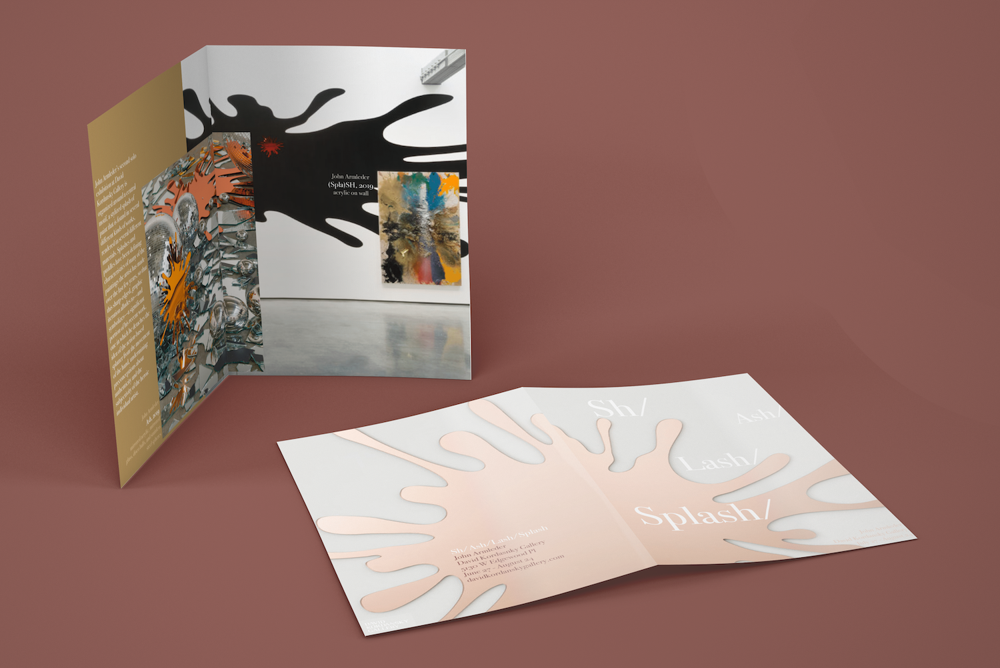
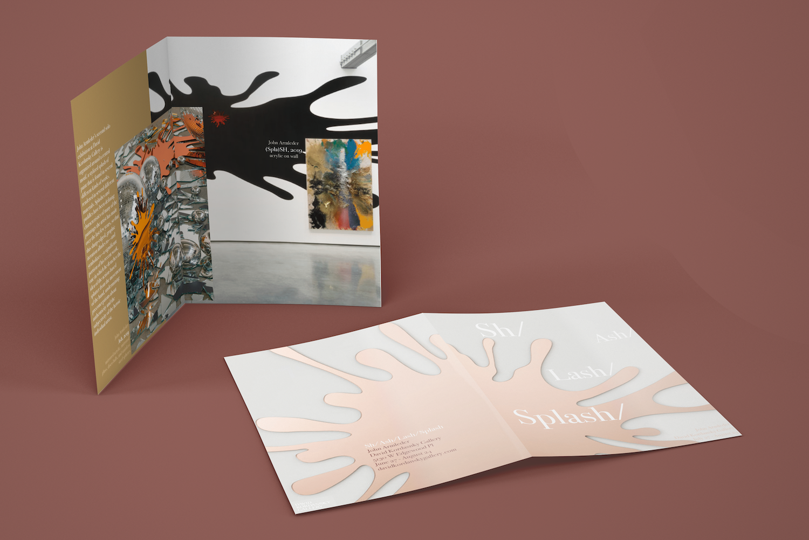

The Sh/Ash/Lash/Splash by John Armleder was a contemporary art exhibition that blended provocative, serious, and playful features through a series of splashes.


 


The Sh/Ash/Lash/Splash exhibition by John Armleder at the David Kordansky gallery in Los Angeles was a contemporary art exhibition that blended provocative, serious, and playful features in each work and the experience as a whole. Armleder created the exhibition so stand alone pieces also contributed towards how all the pieces fit together in the movement, reflection, and change, through representations of the splashes.
In this project, I created the posters, video, publication pamphlet, and website for the gallery to be used as marketing materials.
→ Fall 2019 (10 Weeks)
→ DSGN 266: Graphic Design with Creative Technologies
→ Instructor: Mark Owens
(Images by David Kordansky)